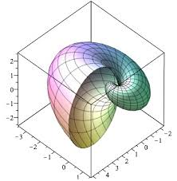
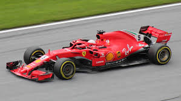

Ayan Pendharkar
I’m the best!
Taekwondo Black Belt
 I’m a first degree black belt in taekwondo, which I’ve been doing for a couple of years at Church’s ATA. My taekwondo has taught me discipline, patience, and many other important values that have helped me become a far better person. I especially enjoy sparring, where I get to test my speed, skill, strategy, and reflexes in a competition-like manner. One day, I hope to earn the opportunity to teach taekwondo myself and pass on the same lessons that have been given to me, which have helped to shape me into the person I am today.
I’m a first degree black belt in taekwondo, which I’ve been doing for a couple of years at Church’s ATA. My taekwondo has taught me discipline, patience, and many other important values that have helped me become a far better person. I especially enjoy sparring, where I get to test my speed, skill, strategy, and reflexes in a competition-like manner. One day, I hope to earn the opportunity to teach taekwondo myself and pass on the same lessons that have been given to me, which have helped to shape me into the person I am today.
Church's ATA
Hobbies and Relaxation

When I’m not doing taekwondo, I love studying math and spending time with my dogs/family. I’m incredibly interested in mathematics, and I’m taking Calculus 3 and Linear Algebra to continue fueling my passion. I also hope to write a paper (preferably more than one) about concepts like topology, graph theory, and fractals. Outside of my interest in math, I also love spending time with my dogs, friends, and family. Any bad day/week can easily be fixed with my late night walks with my dog or just quality time with family and friends.
Cool youtube channel for math
F1 Enthusiast

Well I’m not necessarily a full fanatic, however I still watch F1 races weekly and keep up to track with the drivers. My favorite driver is Carlos Sainz, as he’s STILL Ferrari's last race winner (and probably still will be when you are reading this). I normally watch races with my family while doing homework or something, it's a pretty fun experience overall. Maybe in a different life I could be a racecar driver, although it also does seem a bit dangerous. Who knows?
Ferrari's formula 1 page